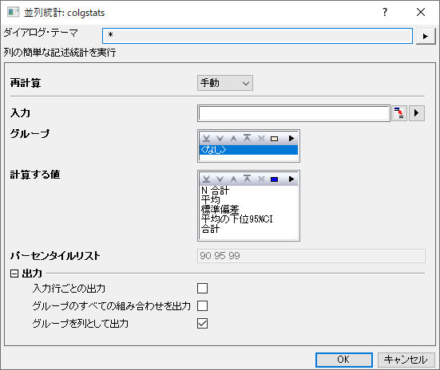
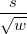
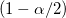
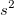
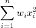
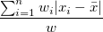
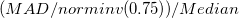

列の値がほとんどテキストの場合、グループ列はカテゴリとして設定されます。そのため、出力列の順序を簡単に変更できます。

入力データ範囲を指定します。
グループ情報を含む複数のグループ列を、グループ列ボックスに入力します。グループ値によって対応するセルのデータがどのグループからのものであるかを示します。 ツールバーの、上へ移動 、下へ移動
、下へ移動 、削除
、削除 、すべて選択
、すべて選択 、選択
、選択 ボタンでグループ列の追加や削除、順序変更が可能です。
ボタンでグループ列の追加や削除、順序変更が可能です。
列の値がほとんどテキストの場合、グループ列はカテゴリとして設定されます。そのため、出力列の順序を簡単に変更できます。
 番目のサンプルを
番目のサンプルを とし、番目のサンプルを
とし、番目のサンプルを とします。
とします。
| N合計 |
Nで表されるデータポイントの総数 |
|---|---|
| N 欠損 |
欠損値の数 |
| 平均 |
平均（アベレージ）スコア
|
| 標準偏差 |
ここで、 注意: OriginProでは、 |
| 平均値のSE | 平均の標準誤差です。
 |
| 平均の下側95%信頼区間 |
平均の95%信頼区間の下側限界
ここで、  棄却値です。 |
| 平均の上側95%信頼区間 |
平均の95%信頼区間の上側限界
ここで、 |
| 分散 |
 |
| 合計 |  。WEIGHT変数がない場合、式は 。WEIGHT変数がない場合、式は になります。 になります。 |
| 歪度 |
歪度は、分布の非対称性の度合いを測るものです。以下のように定義されています。
Note: WDFまたはWSメソッドが選択されると、歪度が欠損値として返されます。 |
| 尖度 |
尖度は、分布のとがり具合を表します。
Note: WDFまたはWSメソッドが選択されると、尖度が欠損値として返されます。 |
| 未修正平方和 |
 |
| 修正平方和 |
|
| ばらつきの係数 |
|
| 平均絶対偏差 |
 |
| SDの2倍 |
標準偏差の2倍です。
|
| SDの3倍 |
標準偏差の3倍です。
|
| 幾何平均 |
Note幾何平均の重みは無視されます。 |
| 幾何SD |
幾何学標準偏差 Note:幾何SDでは重みは無視されます。 |
| モード |
モード（最頻値）は、データ範囲で最も頻繁に表示される要素です。最頻値が複数ある場合は、最小のものが選択されます。 |
| 重みの合計 |
|
| 調和平均 |
調和平均（subcontrary meanとも呼ばれる）
重みあり： いずれかの |
| 最小 |
|
| 最小値のインデックス |
元の入力データセットで最小値がある行の番号です。 |
| 第一四分位(Q1) |
第1 (25%) 四分位、Q1です。計算方法については、分位数の補間を参照してください。 |
| 中央値 |
メディアンまたは第2 (50%)四分位、Q2です。計算方法については、分位数の補間を参照してください。 |
| 第3四分位(Q3) |
第3 (75%) 四分位、 Q3です。計算方法については、分位数の補間を参照してください。 |
| 最大 |
|
| 最大値のインデックス |
元の入力データセットで最大値がある行の番号です。 |
| 四分位範囲 (Q3-Q1) | |
| 範囲(最大-最小) |
最大 - 最小 |
| カスタムパーセンタイル |
カスタムパーセンタイルを計算する場合チェックを付けます。 |
| パーセンタイルリスト |
このオプションは、カスタムパーセンタイルにチェックが付いている場合にのみ利用できます。ここに入力された全ての値でのパーセンタイルが計算されます。 |
| 中央絶対偏差 | 一変量データセット X1, X2, ..., Xn,において、MADはデータの中央値からの絶対偏差の中央値として定義されます。
つまり、まず各データ点とデータの中央値との差（偏差）を求め、それらの絶対値を取った上で、その中央値をMADとします。 |
| ロバスト変動係数 |
 |
| 入力行ごとの出力 | 各データ行の右側に、対応する統計結果を出力します。 |
|---|---|
| グループのすべての組み合わせを出力 | 元データの右側に、グループのすべての組み合わせに対する統計結果を出力します。
Note:
|
| グループを列として出力 | グループ情報を列方向に出力します。 |
 WEIGHT変数がない場合、式は
WEIGHT変数がない場合、式は になります。
になります。^2/d}")


}\frac s{\sqrt{n}}")
}") は、自由度n-1のスチューデントt -統計の
は、自由度n-1のスチューデントt -統計の }\frac s{\sqrt{n}}")
(n-2)}\sum_{i=1}^n w_i^{\frac 32}(\frac{x_i-\bar{x}}s)^3 ,\mbox{for DF}")
^3,\mbox{for N}")
^3,\mbox{for WVR}")
}{(n-1)(n-2)(n-3)}\sum_{i=1}^n w_i^2(\frac{x_i-\bar{x}}s)^4-\frac{3(n-1)^2}{(n-2)(n-3)},\mbox{for DF}")
^4 -3,\mbox{for N}")
^4 -3,\mbox{for WVR}")
^2")


 ^{\frac 1n}")
}") ここで、std は、重み付けされていない標準偏差です。
ここで、std は、重み付けされていない標準偏差です。
^{-1}}n\right)^{-1}")
^{-1}")
 または重みが負の場合は、欠損値を返し、いずれかの
または重みが負の場合は、欠損値を返し、いずれかの}\,")
}\,")
|)\,")